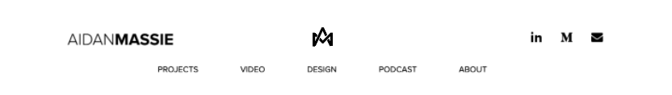

PERSONAL BRANDING GUIDE
For my final project in my Design class this semester (Fall 2020), I
was tasked with creating a brand for myself that included a logo, a
palette, and typography. While I do have a logo already, I normally
don't use it, because my brother made it for me a few years ago and
it bothers me to showcase things that I didn't touch (also, I just
can't give my brother that satisfaction). Below is that original logo,
as well as early-stage sketches for this project.
Original Aidan Massie Logo
Sketches for New Logo
I was, and still am, pretty big into making videos and such, and a play
button seemed like an ideal fit for the old logo. When trying to think about
what to include in this logo, I struggled. I feel like I've expanded my
wheelhouse, making me be able to do a lot of things, but not be perfect at
one specific thing. So, in order to represent myself, I thought of an infitity
symbol. As Wikipedia defines it, infinity "represents something that is
boundless or endless, or else something that is larger than any real or natural
number." As a human, I technically can't be larger than any real or natural
number, but the idea of being boundless or endless struck me. As mentioned before,
I can do a lot of things, and I love to learn a lot of things, but I'm not perfect
at any of them. I felt like the infinity suited my skillset, because I am always
eager to learn how to learn new things, adding to my arsenal of an already
large list. So, I managed to create an infinity symbol that includes my initials,
AM.
I've found in my design work that I prefer a more minimalist look, and
that definitely carried into this project. I went with a minimalist color
palette that is strictly black and white. At first, I attmepted to throw some
colors on the logo, but the black and white proved to be more simple, elegant,
and sharp. In terms of font choice, the logo is actually a custom typeface,
created by the beautiful pen tool in Illustrator. For the sake of the guide,
I have decided that the logo has to be paired with Proxima Nova, the font family
that is used across my website, resume, etc.
Font and Color Choices
Combination of the A and M
With the idea of my initials, AM, in mind, as well as the idea of my endless passion for knowing how to do a lot of things, check out the final iteration of logo below!

Final Concept of Aidan Massie Logo
I went ahead and created some examples for the logo in use. Below you're able to see an example of the logo in the middle of the nav bar on my website, as well as some mock business cards--not my real number, so don't come calling.
Mock Website Header

Business Card Mockup
Overall, I had a really great time working on this. It's about time I made a logo for myself and quit giving my brother the satisfaction. Let me know what you think!